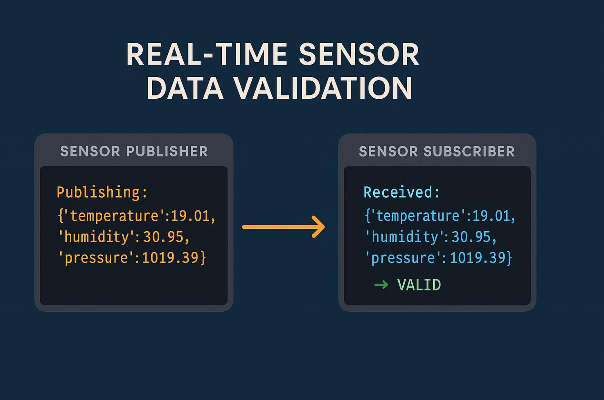
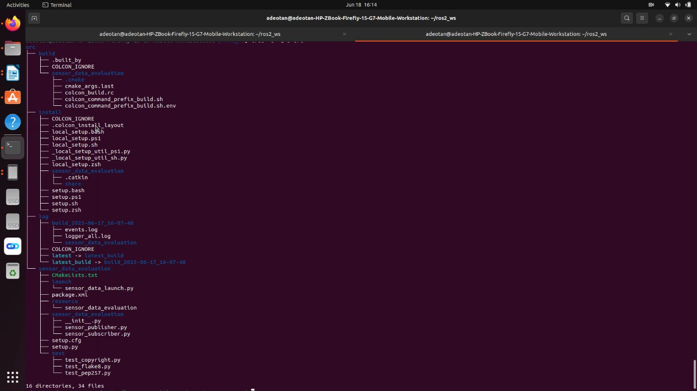
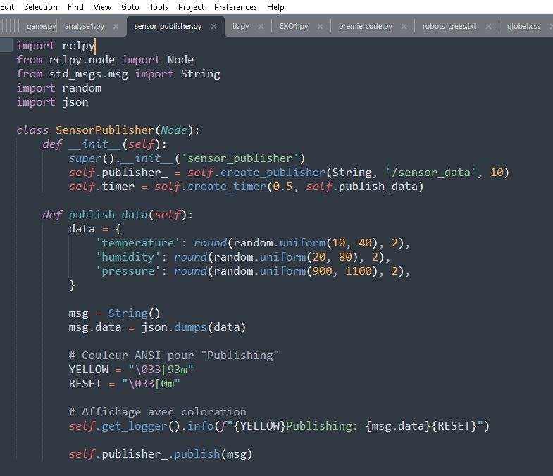
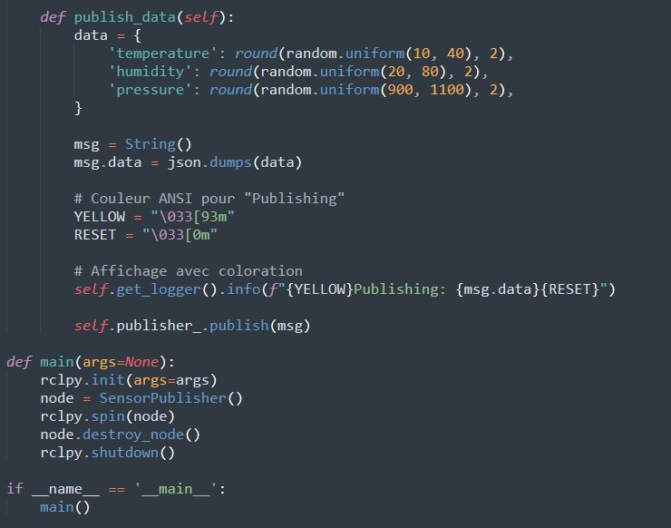
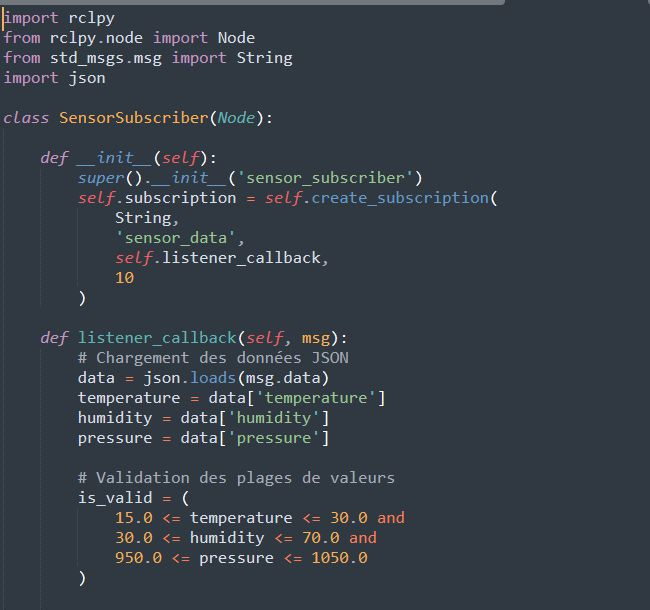
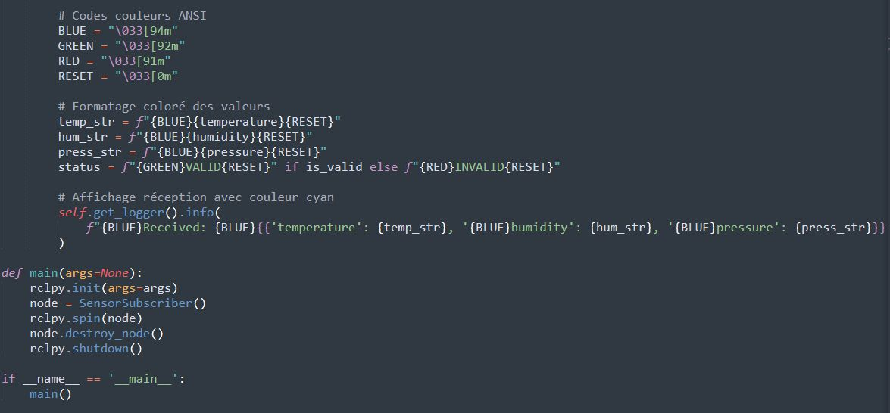
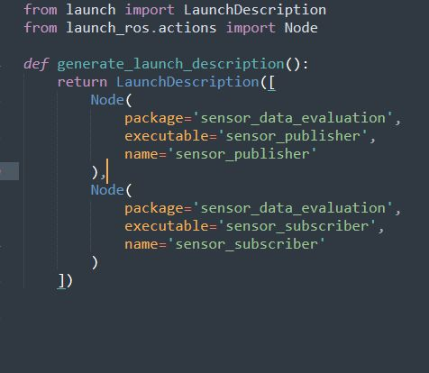
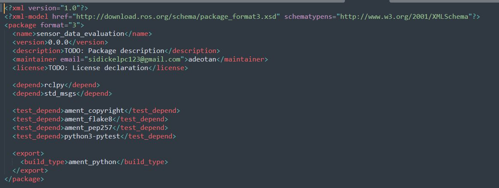
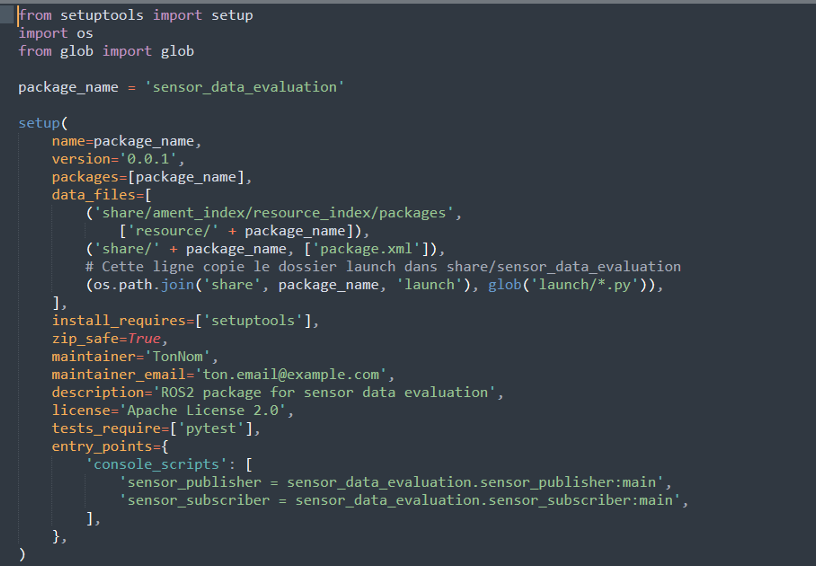
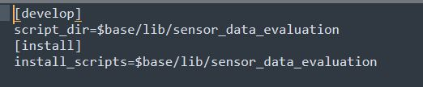

Le projet consiste à développer un package ROS 2 intitulé sensor_data_evaluation, dont le but principal est de simuler l'acquisition, la transmission et la vérification de données issues de capteurs environnementaux. Ce système met en œuvre un flux publisher/subscriber et permet une évaluation en temps réel de la validité des données selon des critères définis.

Ce fichier définit un node ROS 2 chargé de générer des données aléatoires simulant les lectures de trois capteurs : température, humidité et pression. Ces valeurs sont générées toutes les 0,5 secondes.
Fonctionnement général :
Les données sont encapsulées dans un dictionnaire Python puis converties en format JSON.
Elles sont ensuite publiées sur un topic ROS 2 nommé /sensor_data.
L'affichage dans le terminal utilise une coloration personnalisée (par exemple, vert foncé pour indiquer la publication).
Fonctions clés :
__init__() : initialise le node, crée le publisher, et un timer pour déclencher la génération de données.
publish_data() : génère les valeurs aléatoires, les encode en JSON et les publie.


Ce fichier contient le node ROS 2 subscriber qui écoute le topic /sensor_data. À chaque message reçu, il décodera les données JSON, extraira les valeurs des capteurs, et vérifiera leur validité selon les plages définies :
Température : 15°C à 30°C
Humidité : 30% à 70%
Pression : 950 hPa à 1050 hPa
Fonctionnement :
Si les trois valeurs sont dans les plages attendues, un statut "VALID" est affiché.
Sinon, le statut "INVALID" est indiqué.
Un code couleur est appliqué à chaque valeur ainsi qu'au statut final pour une meilleure lisibilité :
Donnée reçue : bleu nuit
Statut : vert ou rouge
Fonctions clés :
__init__() : initialise le node et crée la souscription au topic.
listener_callback() : déclenchée à chaque message reçu, elle analyse et affiche les données.


Ce fichier est un fichier de lancement ROS 2 écrit en Python. Il permet de démarrer simultanément les deux nodes (sensor_publisher et sensor_subscriber) en une seule commande.
Fonctionnement :
Il crée une description de lancement contenant deux instances de Node :
L'un pour le publisher.
L'autre pour le subscriber.
Chaque node est configuré pour afficher ses logs directement dans le terminal.
Objectif :
Simplifier l'exécution et permettre de tester l'ensemble du système sans lancer les nodes séparément.

Ce fichier est un fichier de configuration XML obligatoire pour tout package ROS 2. Il décrit les informations de base et les dépendances nécessaires à la compilation et à l'exécution du projet.
Contenu principal :
Nom du package (sensor_data_evaluation)
Version du package
Description et auteur du projet
Dépendances :
relpy : pour les nœuds ROS 2 en Python
std_msss : pour utiliser les messages de type String
Role :
Il permet à ROS 2 de savoir comment gérer ce package, notamment lors des commandes :
Bash :
colcon build
ros2 launch ...

Ce fichier permet à ROS 2 d'installer le package comme un module Python ROS. Il est utilisé par colcon lors de la compilation.
Éléments clés :
Déclare le package Python et les modules à inclure.
Indique les scripts exécutables à installer (comme sensor_publisher.py et sensor_subscriber.py).
Permet au système de les retrouver comme des nodes exécutables via ROS 2.
Exemple de rôle :
Après compilation, ROS 2 pourra reconnaître les commandes comme :
ros2 run sensor_data_evaluation sensor_publisher

Ce petit fichier complète setup.py avec des instructions de compilation et de distribution.
Il est souvent requis par ROS 2 pour que le système sache que le package suit les conventions de setuptools.
Contenu typique :
La directive develop = true pour indiquer que le package peut être utilisé en mode développement.

Le dossier resource/ contient un fichier sensor_data_evaluation vide, nécessaire à ROS 2 pour marquer le package comme un package Python ROS 2 valide.
Utilité :
Sans ce fichier, ROS 2 ne reconnaîtra pas correctement le package Python, même si le code est bon.
Ce fichier rend le répertoire sensor_data_evaluation/ traitable comme un vrai module Python. Même s'il est vide, il est nécessaire pour que Python reconnaisse le package comme un package importable.
Problème : Lors de l'utilisation de self.get_logger().info(...) dans le subscriber, les
messages semblaient s'afficher deux fois, notamment avec et sans couleur.
Cause : En réalité, ce n'était pas un bug mais une confusion liée à la manière dont ROS 2
affiche les logs. ROS ajoute automatiquement un affichage du message brut, en plus de
celui colorisé par les codes ANSI ajoutés dans le code.
Solution : Le problème a été réglé en désactivant les logs bruts ou en structurant les logs
pour n'avoir que la sortie stylisée. On a veillé à n'afficher que la version colorée des
données.
Problème : Lors de la capture vidéo de l'interface terminal ou de l'exécution des nodes,
certaines applications d'enregistrement vidéo affichaient un écran noir.
Cause : La plupart des enregistreurs utilisent X11 ou Wayland, et certains réglages de
sécurité ou configurations de bureau empêchent la capture du terminal (notamment en
session Wayland).
Solution : Plusieurs outils ont été testés (OBS Studio, Kazam, SimpleScreenRecorder), et
finalement SimpleScreenRecorder en mode X11 a donné de meilleurs résultats. Il a aussi
fallu lancer l'enregistreur avec des droits élevés ou dans le même environnement
graphique que le terminal.
Problème : L'erreur file 'sensor_launch.py' was not found in the share directory of package
s'est produite après une reconstruction du workspace.
Cause : Ce problème survient si :
Le fichier de lancement n'est pas dans le bon répertoire (launch/)
Le fichier n'est pas référencé correctement dans setup.py
Le workspace n'a pas été nettoyé avant colcon build
Solution :
On a placé le fichier sensor_launch.py dans le dossier launch/
On a vérifié que ce fichier était bien mentionné dans setup.py sous data_files
On a exécuté :
Bash :
colcon build --packages-select sensor_data_evaluation
source install/setup.bash
Problème : Certaines couleurs ANSI ne s'affichaient pas correctement dans le terminal
ROS 2.
Cause : Tous les terminaux ne supportent pas de la même façon les codes ANSI, et certains
contextes ROS (notamment ros2 launch) peuvent filtrer les caractères d'échappement.
Solution : Utilisation de couleurs sobres et contrastées (bleu nuit, vert, rouge) avec des
tests manuels dans le terminal pour s'assurer que l'affichage est lisible. Utilisation de
self.get_logger().info(...) uniquement avec du texte pré-formaté.
Problème : Après compilation, ROS ne reconnaissait pas le package Python, ou les scripts
ne se lançaient pas.
Cause : Il manquait des fichiers obligatoires comme :
resource/sensor_data_evaluation
__init__.py
Solution : Ajout des fichiers obligatoires, respect de la structure imposée par setuptools, et
inclusion des scripts dans setup.py → entry_points.
Problème : Lorsqu'un autre utilisateur/séance a été utilisée, ROS ne retrouvait pas les
chemins d'installation du package.
Cause : L'environnement n'avait pas été sourcé, ou bien la compilation du workspace
n'avait pas été refaite pour l'utilisateur courant.
Solution :
Bash :
source ~/ros2_ws/install/setup.bash
colcon build
Dans un projet ROS 2 distribué, où plusieurs machines (par exemple un PC publisher et un autre PC subscriber) doivent échanger des messages, il est impératif de configurer correctement la connexion réseau :
export ROS_DOMAIN_ID=0
Cela permet d’éviter les interférences avec d’autres projets ROS sur le réseau.